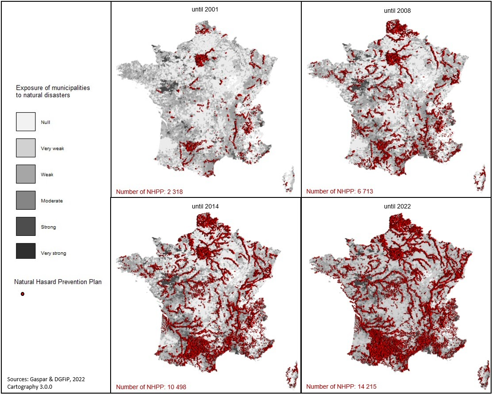
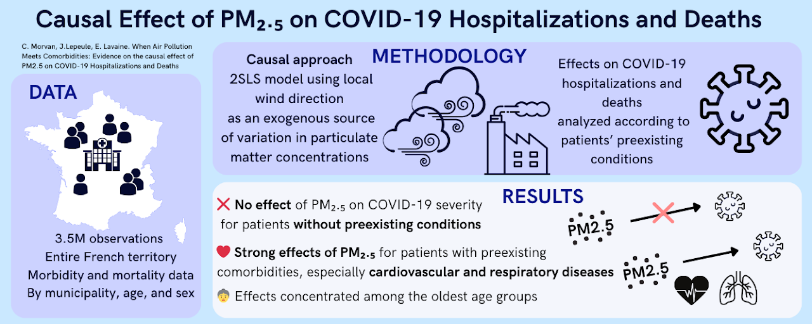
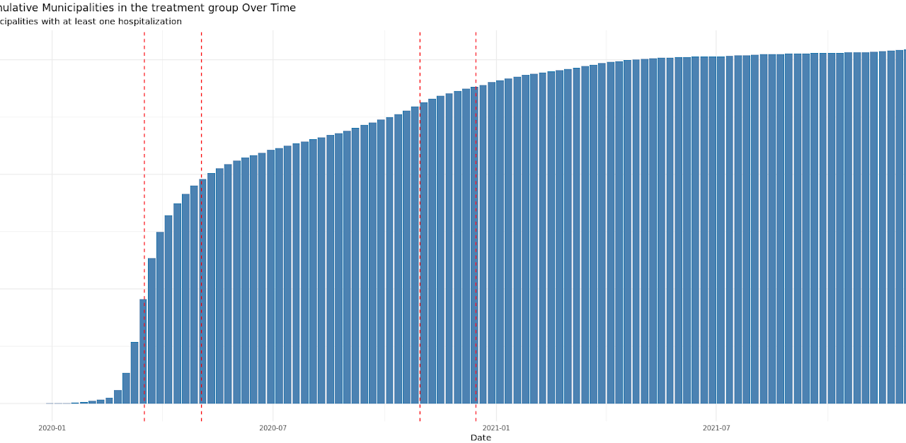
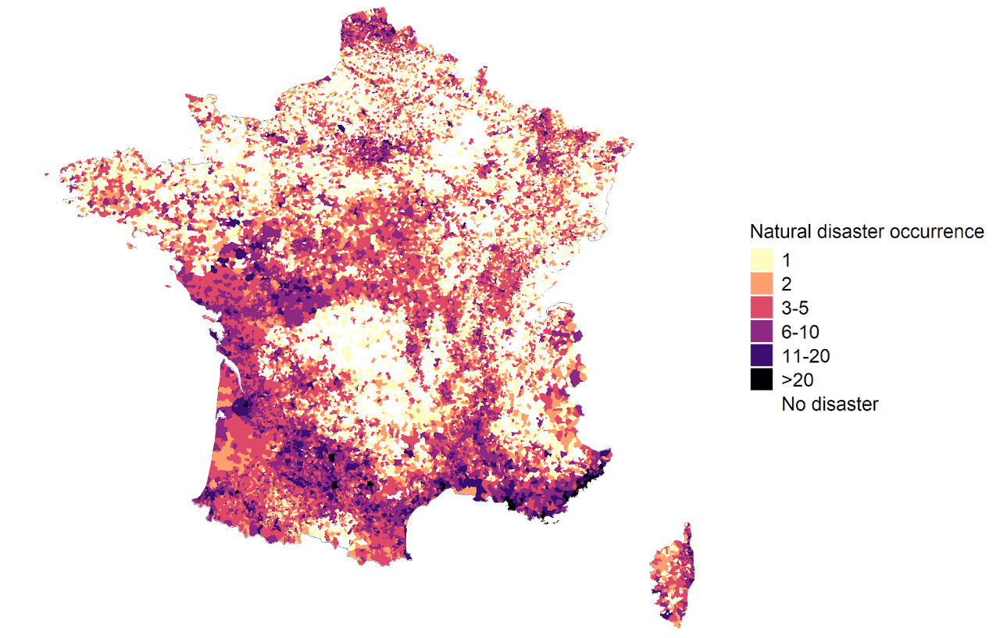

Natural disasters and related prevention policies can affect voter decisions. In this study, we analyze how the occurrence of natural disasters changes voters' behavior at municipal elections and how prevention policies can mitigate the impact of such catastrophic events on budget accounts and might potentially be rewarded by citizens in upcoming elections. We exploit original data on French municipalities where incumbents sought reelection between 2008 and 2020. To estimate the probability of re-election at the municipal level in the event of a natural disaster we apply a Heckman model based strategy to avoid selection bias. We find that the occurrence of natural disasters significantly decreases the chances of re-election of incumbent mayors. However, although we show that natural hazard prevention plans significantly mitigate the impact of catastrophic events on budget accounts, citizens do not reward such prevention policies in upcoming elections. We confirm the hypothesis of myopia: voters reward incumbents for delivering investment spending or decreasing debt but not for investing in spending on disaster preparedness.

L'objectif de cet article est d'analyser l'impact des catastrophes naturelles sur les choix budgétaires des municipalités, en utilisant une base de données originale qui nous permet d'étudier un échantillon comprenant toutes les municipalités françaises, dont 22 972 ont été touchées par une catastrophe naturelle entre 2000 et 2019. Cette analyse exploratoire utilise des modèles de régression de panel dynamique (PVAR) pour estimer les réponses des municipalités aux catastrophes naturelles. Nous montrons qu'un choc provoque une augmentation des dépenses pendant environ 8 ans, ainsi qu'une augmentation des recettes et de l'endettement jusqu'à 10 ans après la catastrophe.
Despite growing evidence on the health effects of air pollution, few studies have examined its impact on COVID-19 hospitalizations and deaths, and none have explicitly accounted for preexisting comorbidities in a causal framework. This study addresses this gap by investigating the relationship between PM2.5 exposure and COVID-19 severity. We place particular emphasis on the role of comorbidities, which can increase vulnerability to COVID-19 and may interact with air pollution exposure. We use an exhaustive dataset covering the entire French territory over 2020-2021, totaling more than 3.5 million weekly observations. We find no significant effect of PM2.5 exposure on COVID-19 mortality or hospitalizations among individuals without preexisting conditions. However, when accounting for comorbidities, we observe a significant increase in both, particularly among patients with respiratory and cardiovascular diseases.

This paper investigates the indirect health effects of the pandemic, focusing on non-COVID mortality in France. Rather than examining the virus itself, we assess the broader consequences of the pandemic as a systemic shock that disrupted access to care, altered health behaviors, and increased psychosocial stress. Using the date of first COVID-19 hospitalization at the municipal level as an indicator of local exposure, we implement a staggered difference-in-differences design to estimate the causal impact of the pandemic on non-COVID-19 mortality.

This paper investigates the causal effect of air pollution on mental health outcomes. We exploit exogenous variation in local pollution levels driven by wind direction and intensity as an instrumental variable to identify the impact. Using detailed administrative health data, we examine diagnosed mental health disorders, with a particular focus on depression and anxiety-related pathologies. Beyond average effects, we document substantial inequalities in exposure across socioeconomic groups and assess how these disparities translate into unequal mental health risks.
This paper provides new evidence on the role of political alignment in natural disaster relief and its reward by voters at the municipal level. To analyze how political alignment between state and municipalities may influence the disaster declaration and the probability for citizens to get insurance compensations after a natural disaster, we exploit an original data set on natural disasters and French municipalities between 2008 and 2020. Using a difference-in-differences (DiD) strategy, we find that the political alignment between the local incumbent and the state significantly increases the probability of obtaining a natural disaster declaration from the state. To check whether citizens reward the incumbents who obtained a disaster declaration and therefore insurance compensation, we apply a Heckman model-based strategy to avoid selection bias. Although a natural disaster reduces the probability for the incumbents to be reelected, this negative effect is lower when the disaster declaration was decided by the state.
Natural disasters can affect territories not just once but repeatedly, with increasing frequency and intensity. This paper analyzes the causal impact of natural disasters on municipalities' budgetary decisions, accounting for both the sporadic nature and repetition of these extreme events. Using an original dataset covering all French municipalities from 2000 to 2022, I employ a staggered difference-in-differences methodology with a non binary treatment approach. The findings reveal that each disaster triggers an immediate increase in municipal spending, followed by a long-term rise in tax revenues. Additionally, a heterogeneity analysis highlights variations across territories vulnerability and disaster types, shedding light on the specific factors that shape municipal responses.

We present a theoretical framework to explore the consequences of natural disasters on municipal financial aggregates. In our model, a local benevolent decision-maker dynamically maximizes the welfare of its fellow citizens, under exogenous shocks. We focus on the occurrence of natural disasters that destroy part of a local capital stock. We highlight how the optimal response is linked to the financial capacity of the local government. More precisely, we perform simulations under fully constrained and totally unbounded access to borrowing. These simulations are performed using calibration derived from a French panel data set covering yearly financial data from 2000 to 2019 over 10.000 municipalities. In both cases, we investigate optimal responses to natural disaster shocks in both cases for investment, local expenditure, and debt. We quantify the relative welfare consequences and the speed of recovery between constrained and unconstrained municipalities.